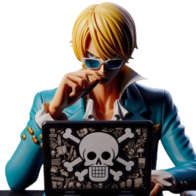
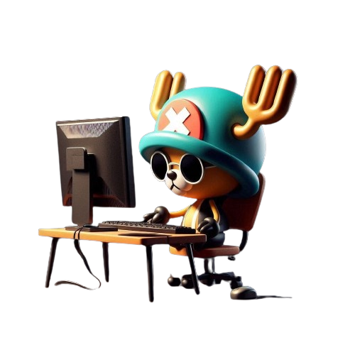
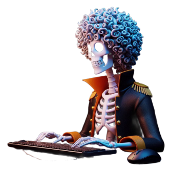
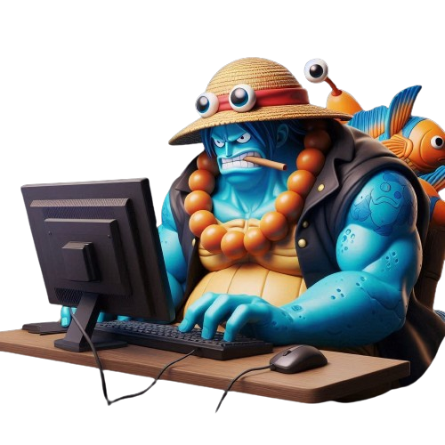

-
luccy
Descrição
Num pequeno bairro onde a tecnologia flui como um rio incessante, havia um menino chamado Luccy, cujo entusiasmo pelo mundo da programação era como uma chama ardente em seu coração. Desde tenra idade, ele se maravilhava com os códigos e algoritmos que moviam o mundo digital. Luccy sonhava em se tornar o rei dos programadores. Ele mergulhava de cabeça em livros, tutoriais online e desafios de codificação. Cada linha de código era como um passo em direção ao seu objetivo, e ele abraçava cada desafio com fervor e determinação. Seu entusiasmo era contagioso. Os amigos o viam como uma fonte de inspiração, e logo se juntaram a ele em suas aventuras de codificação. Juntos, eles formaram uma pequena comunidade de aspirantes a programadores, compartilhando conhecimento, ideias e desafios.
-
Zolo
Descrição
Zolo era um menino diferente dos outros. Desde muito cedo, ele sabia que seu caminho estava traçado na arte da programação, mais especificamente, no universo desafiador do desenvolvimento front-end. Enquanto seus amigos brincavam ao ar livre, Zolo se dedicava incansavelmente aos estudos, absorvendo cada detalhe sobre HTML, CSS e JavaScript como se fossem os alicerces do seu mundo. Seu rosto sério e expressão concentrada muitas vezes o faziam parecer distante, mas por trás daquela fachada havia um fogo interior ardente, uma paixão inabalável por alcançar a perfeição em sua arte. Ele não apenas queria ser bom no que fazia, ele almejava a excelência, buscava constantemente elevar o padrão do que era possível no campo do desenvolvimento front-end.
Cami

Descrição
Cami cresceu em um pequeno vilarejo onde a pobreza era uma realidade cotidiana. Sua mãe trabalhava arduamente para sustentar a família, mas muitas vezes era difícil conseguir o suficiente para colocar comida na mesa. Cami tinha uma irmã mais velha, Sofia, que assumia um papel de liderança na família, cuidando delas com carinho e determinação. quando ela descobriu a programação. Apesar de não ter um computador em casa, Cami frequentava a biblioteca local sempre que podia, devorando qualquer material sobre programação que encontrasse.Finalmente, sua persistência foi recompensada quando ela conseguiu uma bolsa de estudos para estudar ciência da computação em uma universidade renomada. Lá, ela se destacou como uma das melhores alunas de sua classe, impressionando professores e colegas com sua determinação e habilidades excepcionais. Após a formatura, Cami foi contratada por uma grande empresa de tecnologia, onde seu talento foi reconhecido e valorizado. Ela começou a subir na carreira, assumindo projetos desafiadores e deixando sua marca no mundo da tecnologia.
Ukopp
Descrição
Ukopp cresceu em um bairro marcado pela pobreza, onde as oportunidades pareciam escassas e os sonhos eram frequentemente abafados pela realidade cruel da vida. Ele aprendeu desde cedo que para sobreviver naquele ambiente hostil, era preciso ser astuto e muitas vezes recorrer a pequenas mentiras para conseguir o que queria. Sua imaginação e criatividade eram suas maiores aliadas. Ele inventava histórias mirabolantes para escapar da monotonia de sua realidade, sonhando com um futuro mais promissor. Mas suas mentiras, por mais inofensivas que parecessem, acabavam afastando as pessoas ao seu redor, minando a confiança que ele tanto desejava conquistar. Foi quando Ukopp descobriu a programação que tudo começou a mudar. Ele viu na linguagem dos códigos uma forma de expressar sua criatividade e habilidade para resolver problemas. E, mais importante ainda, viu uma oportunidade de construir um futuro diferente, um futuro baseado na verdade e na conquista legítima de seus objetivos. E então, o inevitável aconteceu. Ukopp começou a atrair a atenção de empresas de tecnologia que reconheciam seu talento e sua paixão pela programação. Ele conseguiu um emprego em uma startup promissora, onde suas habilidades foram valorizadas e suas mentiras do passado se tornaram apenas uma lembrança distante.
Ganji
Descrição
Ganji cresceu em uma família onde sempre se sentiu como um estranho, um peixe fora d'água. Seu pai, um homem de negócios rigoroso e exigente, nunca escondeu sua decepção com Ganji, considerando-o uma falha em comparação com seus irmãos mais velhos, que seguiram os passos do pai no mundo dos negócios. Mas enquanto a rejeição do pai pesava sobre ele, Ganji encontrou conforto e amor na presença de sua mãe. Ela via o potencial em seu filho, encorajando-o a seguir seus próprios sonhos e acreditar em si mesmo, mesmo quando o mundo ao seu redor parecia duvidar dele. Foi quando Ganji descobriu sua paixão pela programação que sua vida começou a mudar. Ele sempre teve interesse em tecnologia e computadores, e encontrou na criação de sites uma forma de expressar sua criatividade e talento. Inspirado pela paixão de sua mãe pela culinária, Ganji decidiu criar um site de receitas online, onde pudesse compartilhar suas próprias criações e inspirar outras pessoas a experimentarem novos pratos. E assim, Ganji se tornou um exemplo de resiliência e determinação, mostrando que, mesmo diante da rejeição e do desprezo, é possível transformar sua vida e alcançar grandes feitos. Seu site de receitas não era apenas uma fonte de inspiração culinária, era um testemunho de sua capacidade de superar adversidades e encontrar sucesso onde outros viam apenas falhas. Ganji havia encontrado seu lugar no mundo, não como a falha que seu pai o considerava, mas como um talentoso programador e empreendedor, capaz de alcançar seus próprios sonhos e inspirar os outros a fazerem o mesmo.
Rony Rony Popper
Descrição
Desde cedo, Rony Rony Popper enfrentou desafios que a maioria das crianças nunca imaginaria. Abandonado por sua família, Sua vida mudou quando ele descobriu sua paixão pela medicina. Inspirado pela dedicação dos médicos que o trataram durante sua infância difícil, Popper decidiu que queria seguir seus passos e dedicar sua vida a ajudar os outros. Ele mergulhou nos estudos com uma determinação feroz, absorvendo cada pedaço de conhecimento como uma esponja. Mas Popper não estava satisfeito em apenas seguir o caminho tradicional da medicina. Ele viu o potencial da tecnologia para revolucionar o campo da saúde e decidiu explorar essa área também. Ele mergulhou na programação, aprendendo a desenvolver software e aplicativos que poderiam melhorar a eficiência e a precisão dos tratamentos médicos.Graças ao seu trabalho árduo e sua determinação inabalável, Popper se tornou um líder no campo da medicina digital. Seu nome era sinônimo de inovação e excelência, e suas contribuições revolucionaram a forma como a saúde é praticada em todo o mundo. Ele provou que, com paixão, perseverança e um pouco de tecnologia, é possível superar até os desafios mais difíceis e mudar o mundo para melhor.
Ohara-robben
Descrição
Ohara Robben cresceu em um mundo onde a solidão era sua única companheira constante. Desde muito pequena, foi deixada à própria sorte pelos pais, que, atolados em suas próprias lutas e dificuldades, não conseguiram dar a atenção e o cuidado que ela merecia. Ohara passou por diversas casas de famílias adotivas, mas infelizmente, encontrou mais hostilidade do que calor humano em muitos desses lares.Foi em uma dessas casas adotivas que Ohara descobriu a biblioteca local. Ali, entre as páginas empoeiradas dos livros, ela encontrou refúgio e consolo. A bibliotecária, uma mulher gentil e compassiva, viu o potencial em Ohara e incentivou-a a explorar diferentes áreas do conhecimento. Foi durante uma dessas visitas à biblioteca que Ohara descobriu a programação. Fascinada pela ideia de criar algo do nada, ela mergulhou de cabeça nos livros e tutoriais disponíveis, devorando cada pedaço de informação com voracidade. A programação tornou-se sua nova paixão, sua luz no fim do túnel da solidão.
Francis
Descrição
Francis cresceu sem o amor e a estabilidade que a maioria das crianças tem a sorte de ter. Abandonado por sua família, ele enfrentou a solidão desde muito jovem, vagando pelas ruas sem um lar para chamar de seu. Mas mesmo nas horas mais sombrias, havia uma luz que brilhava em seu caminho: o encontro com Tom. Tom era mais do que um carpinteiro habilidoso; ele era um homem de grande coração, que viu em Francis um jovem cheio de potencial e determinação. Ele o acolheu como um filho, ensinando-lhe os segredos da carpintaria e oferecendo-lhe a figura paterna que ele tanto ansiava. E foi assim que Francis conheceu Berg, o pupilo de Tom, que se tornou mais do que um amigo - ele se tornou um irmão. Apesar do talento de Francis para a carpintaria, os negócios não estavam indo bem. A concorrência era feroz e as encomendas eram escassas, deixando a pequena família em dificuldades financeiras. Foi então que Francis decidiu que era hora de mudar de rumo. Ele mergulhou de cabeça no mundo da programação, aproveitando sua habilidade para criar soluções tecnológicas inovadoras para os problemas que enfrentavam. Com determinação e perseverança, ele aprendeu a desenvolver aplicativos e sites que não apenas ajudavam a promover o negócio de carpintaria deles, mas também os conectavam com clientes em potencial em todo o mundo. Com o tempo, os negócios começaram a prosperar novamente, graças ao toque mágico de Francis com a programação. Sua habilidade para construir e desbravar as novas mudanças tecnológicas mundiais ajudou a colocar sua nova família de volta nos trilhos, trazendo-lhes sucesso e estabilidade que eles nunca imaginaram ser possível.
Grooves
Descrição
Grooves, um nome que ecoava no submundo das ruas, mas que agora ressoava em um novo cenário: o da música e da tecnologia. Antes de se tornar uma figura proeminente nesses campos, Grooves cresceu em um ambiente onde a criminalidade era mais comum do que a paz. Envolveu-se em atividades perigosas desde jovem, buscando a camaradagem em grupos onde a lealdade era tão frágil quanto o vidro. Mas, à medida que o tempo passava, Grooves viu-se perdendo amigos e companheiros próximos, alguns para a violência das ruas e outros pela traição mútua. A solidão tornou-se sua companheira mais constante. Passou longos períodos isolado, refletindo sobre suas escolhas e as consequências de suas ações. Foi nesses momentos de introspecção que ele começou a sonhar com uma vida diferente, uma vida sem crime e sem violência. Foi então que a música entrou em sua vida. Grooves descobriu que tinha um talento natural para criar ritmos cativantes e letras emocionantes. A música tornou-se sua forma de expressar suas experiências e emoções, uma terapia para a alma cansada de tantos conflitos. Ele também percebeu o potencial da tecnologia para transformar vidas. Com sua habilidade em programação, começou a criar softwares inovadores que uniam a música e a tecnologia de maneiras nunca vistas antes. Seus programas permitiam aos músicos explorar novos sons e criar obras-primas sem precedentes.
Binje
Descrição
Binje, aos quarenta anos, era um homem que havia consolidado sua vida de maneira admirável. Com uma carreira estável e uma vida pessoal confortável, ele parecia ter conquistado tudo o que almejava. No entanto, havia uma inquietação crescente em seu interior, uma sensação de que algo estava faltando, algo que o desafiasse e o fizesse sentir-se vivo de verdade. Em meio a essa busca por algo mais, Binje encontrou um novo interesse: a programação. No início, foi apenas uma curiosidade, uma forma de ocupar o tempo livre. Mas à medida que mergulhava mais fundo no mundo da codificação, ele descobria uma paixão até então desconhecida. A programação não era apenas um escape, era um novo universo que se abria diante dele, cheio de desafios, complexidades e possibilidades infinitas. Binje se viu imerso em aprender novas linguagens, resolver problemas intricados e desenvolver projetos que antes nem mesmo imaginava serem possíveis.